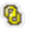

Alternate Assemblies Table dialog box
Displays the alternate assembly members in spreadsheet format. You can use the command buttons and shortcut menu commands to create, modify and display alternate assembly members.
- New
-
Displays the New Member dialog box where you can define the name of a new member.
- Delete
-
Deletes the active member. A dialog box is displayed to confirm you want to delete the active member. You cannot delete the first member.
- Save Member As
-
Displays the Save Member dialog box so you can create a separate assembly document for the active member. The new assembly document is a normal assembly that does not contain alternate assembly members.
- Rename Member
-
Renames a member.
Caution:Renaming a member will cause any references to this member to be broken.
- Apply Member
-
Applies the changes to the members that are checked.
- Save Selected Members
-
Saves only the members that are checked. Use the Select Member(s) to save option to specify the members that you want to save.
- Update Members
-
Updates the members based on changes you have made to the table.
- Activate Member
-
Activates the selected member in the graphic window. To activate a member, click the column heading for the member you want, then click the Activate Member button.
- Save Changes
-
Saves the changes you have made to the table. You can discard all changes since the last Save Changes action by clicking the Restore button.
-
Prints the table to a printer you specify.
- Copy
-
Copies the selected data.
- Paste
-
Pastes the data to the table.
- Restore
-
Restores the table to the previous saved configuration. A dialog box is displayed to confirm that you want to discard the changes you have made.
- Save All Members
-
Recomputes and saves all the alternate assembly members. The Save command saves the source document and recomputes and saves only the members that have been modified since the last save operation.
- Select All Members
-
Selects all members in the table.
- Publish Members (Available only in the Teamcenter-managed environment)
-
Creates individual items in Teamcenter for the selected members. Each member is identified by a unique Item ID, Revision and name.
- Table Area
-
Displays the alternate assembly members in spreadsheet format.
- Preview Window
-
Displays the currently selected alternate assembly member in a preview window. If you want to make the selected member the active member, click the Activate Member button.
- Save options
-
- Save only Source and Active Member (Faster)
-
When checked, saves only the source and active member when you save changes.
When unchecked, saves all members.
Symbols
The following symbols are used in the Alternate Assemblies Edit Table dialog box:
|
Legend |
|
|---|---|
|
Excluded part or relationship for the active member |
|
|
Failed part or relationship for the active member |
|
|
Member is populated, in sync, and out of date. |
|
|
 |
Member is populated and up to date. |
|
Member is not populated. |
How do I
Create a new alternate position assemblyCreate a new family of assemblies
Publish family of assembly members to Teamcenter
Define a list of alternate components for a part
Save an alternate assembly member as a separate assembly
Examples: Dynamically moving a part in an assembly
Learn more
Alternate AssembliesAlternate assemblies impact on Solid Edge functionality
Using Family of Assemblies in the Teamcenter-managed environment
Look up more details
Save to Source commandSave to Member command
Define Alternate Components Dialog Box
Define Alternate Component command
Edit Definition command
Alternate Member Dialog Box
Assembly Member dialog box
New Member dialog box (Family of Assemblies tab)
Alternate Assemblies dialog box
Dynamic Configuration dialog box
Family of Assemblies tab
Save Member dialog box